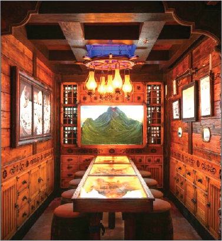

Despite its sunny persona, tiki's history is far from welcoming and inclusive. First and foremost, tiki's U.S. representation conflates several Polynesian, Southeast Asian, and even Caribbean cultures - often sufferers of colonialism - into its singular vision. As a result, there is a misrepresentation, lack of credit, or historical impact acknowledgment of these unique audiences.
Tiki kitsch reinforce stereotypes and emphasize exoticism. Modern tiki often rebrands as a broader "tropical" theme, recognizing this fraught history. Simply replacing tiki mask mugs with palm leaf designs is not a cure-all, though.
A new generation of bar owners and spirits specialists brings new life, diversity, and understanding to this genre.
Tanam Owners
Kyisha Davenport, Sāsha Coleman, and Ellie Tiglao
See them in Boston, Massachusetts
Bars like Boston's Tanám represent the evolution of modern tiki. Bar owners Kyisha Davenport, Sāsha Coleman, and Ellie Tiglao are reinvigorating tiki by "infusing their tiki drinks with deeper meaning and stories," an evolution they call Afro-Tiki. Through food, drink, and conversation, their vision centers on Black and Brown voices to shed light on these marginalized and often forgotten contributions to tiki.

Tiki Tatsu-Ya
View of restaurant's interior
Visit this hangout in Austin, Texas
Headed southwest to Austin, Texas, Tiki Tatsu-Ya incorporates Japanese culture into its modern vision and moves away from its classic tropes to focus on tropical rather than tiki branding. The bar's narrative focuses on a fictional island and draws inspiration from various sources, and chooses to be more nondescript in its style. Patrons can expect a surreal experience.
Shannon Mustipher
Mixing a series of tropical cocktails
See her recipes in her book "Tiki: Modern Tropical Cocktails"
Spirits educator Shannon Mustipher's 2019 book "Tiki: Modern Tropical Cocktails" became the first cocktail recipe book published in more than 100 years to be written by a Black bartender. Shannon showcases new versions of classic drinks for a modern take on tiki in her book.
It's an exciting time for tiki culture. Through increased diversity, awareness, and conversation, tiki can become a more welcoming and inclusive environment.